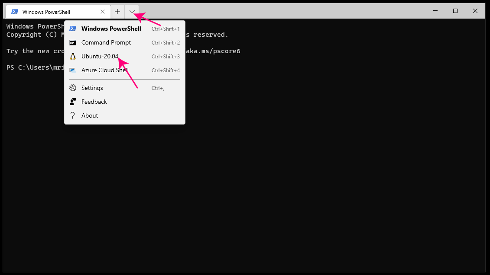

How to Install the Workflow¶
There are two parts to the Nextflow workflow:
- The Nextflow system that orchestrates the worfklow
- The actual running of the programs that are part of the workflow
These instructions will primarily describe how to install Nextflow on your computer so that you may start workflows using your computer. It does not assume that you will be running the individual computational steps on your computer. “Your computer” may refer to your personal workstation or a server you may log in to.
Follow these steps to install Nextflow and its required components. These steps only need to be performed once.
If On Windows¶
If you are on Windows, you may need to install two components: Windows Terminal and WSL2.
Install Windows Terminal¶
To install Windows Terminal use Microsoft Store (https://apps.microsoft.com/store/apps). To learn more see: https://learn.microsoft.com/en-us/windows/terminal/install.
Install WSL2¶
Nextflow can only be run on a POSIX compatible operating system like Linux and MacOS. Users of Windows 10 and up may install WSL2 to natively run Linux apps in Windows. Follow these instructions from Microsoft to install WSL2 if it not installed: https://learn.microsoft.com/en-us/windows/wsl/install
Once installed you can easily access the command line of your new Ubuntu LTS installation by launching Windows Terminal and clicking the menu icon as depicted below. Note Ubuntu 20.04 may be a different version number on your system.
Important
All steps must be performed on the command line. If you are on MacOS or Linux, open a terminal and run the given commands. If you are on Windows, open a command line as described above.
Install Nextflow¶
Follow the instructions at: https://www.nextflow.io/docs/latest/getstarted.html.
Set up placeholder credentials¶
The workflow currently needs a placeholder value for the secret key for PanoramaWeb to run. Enter the following on the command line where nextflow is being run:
nextflow secrets set PANORAMA_API_KEY "PLACEHOLDER"
nextflow secrets set LIMELIGHT_SUBMIT_UPLOAD_KEY "PLACEHOLDER"
Optional: Set up AWS CLI on local system¶
This step needs to be performed if AWS Batch or S3 are going to be used.
On Ubuntu (which you have if you follows the Windows directions above):
sudo apt update && sudo apt install -y awscli
If you are on MacOS or another Linux distribution, follow Amazon’s directions here: https://docs.aws.amazon.com/cli/latest/userguide/getting-started-install.html
Optional: Set up AWS credentials¶
If you are going to run workflows on AWS Batch or use S3, set up your AWS credentials.
- Obtain the access key and secret key from the user’s AWS account. This can be found at https://us-east-1.console.aws.amazon.com/iamv2/home?region=us-east-1#/security_credentials?section=IAM_credentials. After logging in, click the “Create access key” button in the “Access keys” section, choose the “Command Line Interface” option, optionally give the access key a name, then create the key. Then copy and paste the access key and secret access key to a text editor for the next part.
- On the local system, run:
aws configure- Enter the access key for “AWS Access Key ID”. Enter the secret key for “AWS Secret Access Key”. Hit <ENTER> for the other options.
Detailed instructions can be found at: https://docs.aws.amazon.com/cli/latest/userguide/cli-configure-files.html.
Optional: Set up PanoramaWeb credentials¶
If you will be downloading files from Panorama for processing, you will need to set up your Panorama API key. Follow these instructions:
After logging into PanoramaWeb, click the user-shaped icon in the top-right next to your username and choose “External Tool Access”.
Click “Generate API Key” then “Copy To Clipboard”.
- Then on the local system, run:
nextflow secrets set PANORAMA_API_KEY "xxxxxxxxxxxxxxxxxxxxxxxx"
Be sure to replace “xxxxxxxxxxxxxxxxxxxxxxxx” with your access key.
Optional: Set up Limelight credentials¶
If you are going to upload the results of the workflow to Limelight for visualization, analysis, and sharing, you will need to set up your Limelight credentials so the workflow has permissions to upload data to your account.
Follow these steps:
Log into Limelight
Access any project by clicking on that project’s link on the start page
Expand the “Upload Data” section and click on “Command Line Import Info”
Click the “Show Key” button and copy the key to the clipboard. It is all the letters and numbers to the right of
--user-submit-import-key=. It should appear in a similar form as:xd7263ddb8177d4xyzd374594b769f751100jj83777Then, on the command line of the local system run:
nextflow secrets set LIMELIGHT_SUBMIT_UPLOAD_KEY "xxxxxxxxxx"
Replace xxxxxxxxxx with the access key you copied to your clipboard.
Optional: Install Docker on local system¶
This step needs to be performed if processes (e.g., Magnum) are going to be run on your local computer. That is, the actual processing steps will be run locally.
Follow the Docker install guide at: https://docs.docker.com/engine/install/
Optional: Set up Docker credentials¶
If you installed Docker and are going to be running the steps of the workflow on the local system (e.g. running Magnum on your computer), you will need access to execute Docker containers without having to use sudo. Instructions to set this up can be found at https://docs.docker.com/engine/install/linux-postinstall/, under the heading “Manage Docker as a non-root user”.